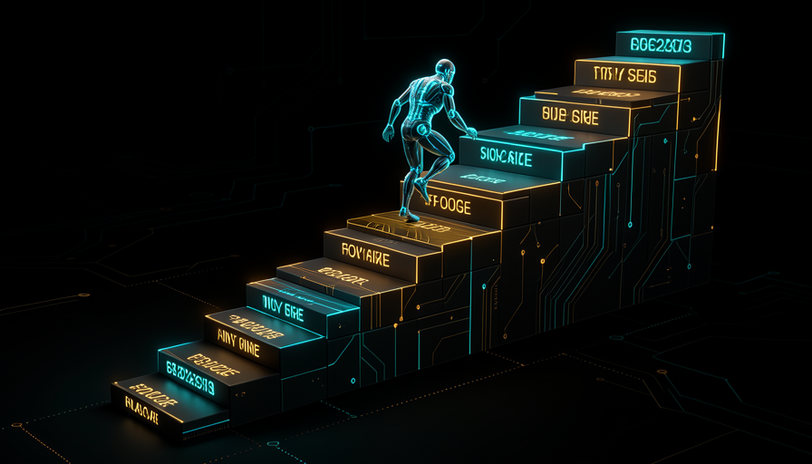

📏 ¿Qué es el «horizonte de tareas»?
Hay una forma de convertir la frase vaga «la IA está mejorando» en una cifra que podamos seguir. Esa cifra es el horizonte de tareas: la tarea más grande —medida por el tiempo que tardaría una persona en hacerla— que el modelo completa con cerca de un 50 % de éxito. Si la IA termina sola tareas que le llevarían 12 horas a una persona, decimos que su horizonte es de 12 horas.
🆕 ¿Es la primera vez que estás aquí? Tres términos antes de seguir
- METR: una organización independiente (no es un laboratorio ni un fabricante de modelos) que evalúa las capacidades y los riesgos de los modelos de frontera — los más avanzados, de laboratorios como Anthropic, OpenAI y DeepMind. METR es quien elabora la curva.
- Horizonte de tareas: la regla de medición: cuánto trabajo humano, medido en tiempo, puede hacer la IA de principio a fin.
- Tasa de éxito del 50 %: el umbral. No significa «siempre acierta», sino «acierta la mitad de las veces»: el punto en que la tarea empieza a ser demasiado grande para el modelo.
🎯 Por qué medir en tiempo humano
Medir en «el tiempo que tardaría una persona» es genial porque todos entendemos esa unidad. «Resuelve el 56 % de las preguntas» no dice nada sobre el tamaño del trabajo. «Hace sola algo que te llevaría un día» lo dice todo. La curva no mide inteligencia abstracta: mide autonomía útil.
📈 La curva: 4 min → ~1,5 h → ~12 h → 16 h+
De marzo de 2024 a 2026, el horizonte medido por METR pasó de unos minutos y llegó a más de medio día de trabajo. La escalera en la parte superior de la página lo muestra: 4 min, luego ~1,5 h, después ~12 h y finalmente 16 h+. Lo importante no es cada escalón por separado, sino la pendiente: la medida se duplica en intervalos cortos.
Cómo leerlo: a la izquierda (tareas cortas), casi todo son aciertos; a la derecha (tareas largas), casi todo son errores. La línea discontinua señala dónde la IA acierta la mitad de las veces: ese punto, medido en tiempo humano, es el horizonte.
💡 Consejo de lectura
No memorices las cifras; memoriza la forma. Una curva que se duplica cada pocos meses es exponencial, y el crecimiento exponencial engaña a la intuición, que espera líneas rectas. Por eso el horizonte pasó «de repente» de minutos a horas.
🧱 16 h fue el límite de la PRUEBA, no del modelo
Aquí está el error de lectura más común. La propia METR advirtió que, por encima de 16 horas, las mediciones de esa suite dejaban de ser fiables. Es decir, «16 h» es el techo del instrumento —hasta dónde puede medir bien la prueba—, no la frontera de lo que el modelo es capaz de hacer.
⚠️ Cuidado con el titular
Interpretar «16 h» como «el máximo que puede hacer la IA» contradice los datos. Puede que el modelo llegue más lejos; esta prueba no permite afirmarlo. Tomar un techo de medición como límite de capacidad es como decir que un coche solo alcanza 200 km/h porque hasta ahí llega el velocímetro.
✓ Lectura honesta
- ✓«La prueba mide bien hasta ~16 h.»
- ✓«La tendencia sigue subiendo.»
- ✓«Necesitamos mejores pruebas por encima de ese límite.»
✗ Lectura engañosa
- ✗«La IA se detiene a las 16 h.»
- ✗«Ese es el límite definitivo.»
- ✗«Llegó al límite, ya podemos relajarnos.»
⏱️ Por qué el horizonte largo importa para la RSI
La auto-mejora recursiva (RSI) —la IA que ayuda a diseñar la siguiente IA— no requiere un genio que lo resuelva todo al instante. Requiere un trabajador útil durante horas y días seguidos: que mantenga el hilo del problema, ejecute experimentos, espere los resultados y continúe. Por eso el horizonte largo (horizonte largo) es la pieza que conecta esta trilha con toda la alerta.
Horizonte corto × horizonte largo
🔗 El puente hacia el siguiente módulo
Quédate con esta idea: si la IA ya puede trabajar de forma continua durante horas, la siguiente pregunta es: «qué tamaño del proyecto puede terminar por sí sola?». Eso es precisamente lo que mide MirrorCode, y ahí veremos una ejecución que funciona durante días sin una persona (Módulo 2.2).
🔬 Cómo se mide (y por qué es difícil)
Se mide así: se reúnen muchas tareas de duración conocida (se sabe cuánto tardaría una persona en cada una), se ejecuta el modelo en todas y se busca la duración en que acierta cerca de la mitad de las veces. Ese punto es el horizonte. Es fácil de explicar, pero difícil de medir bien, por tres motivos.
Variabilidad
La misma tarea puede salir bien en una ejecución y fallar en otra. Por eso se ejecuta muchas veces y se usan promedios, no una sola prueba.
Estimar el tiempo humano
¿Cuántas horas de trabajo humano «vale» una tarea? Es una estimación, y las estimaciones tienen un margen de error. Dos evaluadores pueden discrepar.
La prueba alcanza su propio límite
Cerca del extremo superior (las 16 h del Tema 3), faltan tareas lo bastante largas y bien medidas. El instrumento se queda corto antes que el modelo.
⌨️ Ejemplo copy-run · percibe el horizonte en tu propio trabajo
Objetivo: entrenar la mirada para distinguir tareas de horizonte corto y largo a partir de tu jornada. Pega el bloque siguiente en cualquier chatbot.
Cómo comprobarlo: la respuesta debe distinguir las tareas de minutos (horizonte corto) de las de horas o días (horizonte largo), no limitarse a decir «la IA lo hace todo». Si no distingue ambas, vuelve a pedirlo.
🧭 Lo que la curva NO demuestra
La curva es una prueba sólida de una tendencia. No demuestra un destino. Prolongar la línea del gráfico y afirmar que «pronto la IA hará tareas que duran meses» es cambiar medición por profecía. La postura honesta del curso es tomar en serio los datos e indicar dónde terminan y dónde empieza la especulación.
🟢 Sólido (lo respalda la curva)
- ✓El horizonte de tareas ha aumentado de forma constante.
- ✓Entre 2024 y 2026, pasó de minutos a más de medio día.
- ✓METR es una fuente independiente con un método transparente.
🟡 Por verificar / especulación
- ▲«La línea sigue igual y llega a tareas de semanas.»
- ▲Una fecha exacta en que el horizonte superará X horas.
- ▲Que el ritmo actual está garantizado para el futuro.
💡 La regla de oro del curso
Tendencia observada = sólida. Fecha de llegada = conjetura. Cuando alguien combine ambas en una frase, sepáralas antes de creerlo. La curva dice «está subiendo rápido», no «llegará en tal año».

Autoevaluación (opcional): ¿qué significan las «16 horas» en la curva de METR?
🎯 Resumen del módulo
Próximo módulo:
2.2 — MirrorCode: reconstruir a ciegas. De «cuánto tiempo aguanta» a «qué tamaño de proyecto puede terminar por sí sola».